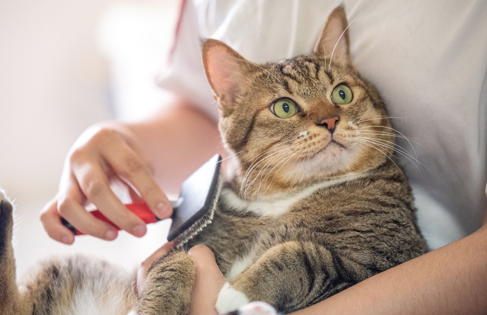

스마트한 일생
우리집 냥이 건강 지키기
꼭 챙겨야 할 건강 포인트
한해 한해 연도가 바뀔 때마다 신경 쓰이는 부분 중 하나가 건강입니다. 코로나 사태가 계속 이어지며 건강에 더 신경을 쓰게 되는 요즘인데요. 함께 지내는 반려동물의 건강도 함께 챙겨야겠죠.
몸에 이상이 있거나 아픈 곳이 있으면 말로 표현할 수 있는 인간과 달리 반려동물은 혼자 끙끙 앓고 있는 경우가 생길 수 있습니다. 오늘은 반려동물, 특히 반려묘의 건강 관리에 대해 알아보겠습니다.
우리 아이의 진짜 나이는?
우선 우리 아이가 얼마나 컸는지 판단하는 것인 첫 단계예요. 흔히 반려동물의 나이를 사람 나이로 환산할 때 반려동물 나이에 7을 곱하죠. 아직 성체가 되기 전 유아기에는 해당 계산법에 큰 오차가 없지만, 나이가 들수록 실제 체감 연령과 차이가 발생하기 시작합니다.
미국수의영양학회(ACVN) 회장을 역임했던 이베타 베크바로바(Iveta Becvarova) 수의사는 수의학이 발전하면서 반려동물의 수명도 전반적으로 늘었다고 밝혔는데요. 이에 따라 반려동물 나이 계산 방식도 새롭게 정립되고 있죠.
가령 반려묘의 나이가 2살이면 사람 나이로 20대 중반, 5살이면 30대 중반, 10살이 넘어가면 환갑에 해당하는 식이죠. 함께 하는 아이의 나이를 계산해봤을 때 성묘에 접어들 때쯤이면 건강 관리에 더욱 신경 써야 합니다.
물론 이제 막 성장해가는 어린 고양이들에게도 세심한 관리가 필요합니다. 육체적인 건강 관리는 물론 사회화 등 정신적인 건강도 중요하죠. 생후 첫 7주까지 약 두 달여간에는 1차 사회화 과정이 진행되며 사람과의 교류를 긍정적으로 여길 수 있는 기간입니다. 약 12주까지 진행되는 2차 사회화 시기에도 세심한 관심과 배려가 필요하고요.
병원에 가기 위해 들어가는 이동장부터 발톱 깎기, 이빨 닦기, 목욕 등 위생 활동과 집사 이외의 여러 사람을 만나는 모든 과정이 아기 고양이에게는 태어나 처음 겪는 경험이므로 긍정적인 인상으로 남을 수 있도록 도와주려는 노력이 필요해요.
막막한 건강 체크, 빗질하며 간단하게
막상 건강 상태를 확인하러 마음먹어도 어떻게 해야 할지 감이 잡히지 않죠. 본격적인 건강 확인에 앞서 반려묘가 편안함을 느낄 수 있는 분위기 조성이 필요합니다. 매일 한 번씩 건강 상태를 확인하는 주기가 가장 이상적인데, 몸을 살펴보는 행위가 고양이에게 불편하게 느껴지면 자주 하기가 어렵겠죠. 빗질 해주면서 반려묘가 편안한 상태를 만들어 주고 나서 살펴보기를 추천합니다.

고양이의 건강 상태를 확인하기 위한 첫 번째 부위는 눈입니다. 눈꺼풀을 뒤집으면 보이는 결막이 부었는지 확인하고 눈곱의 색도 노란색 또는 적갈색이 아닌지 확인해봐야 합니다. 결막이 부었다면 감기의 초기 신호이거나 결막염 증세의 시작일 수 있어요.
심지어 집사가 모르는 새 어딘가에 부딪혀 생긴 외상의 가능성일 수도 있습니다. 외상의 경우 각막 손상까지 이어질 수 있으니 꼭 확인할 필요가 있어요.
다음으로 확인해야 하는 부위는 코입니다. 평소 띠고 있던 코의 색상 대비 창백해졌다면 빈혈을 의심해볼 수 있습니다. 평소 컨디션이 정상일 때의 코를 사진으로 찍어두고 비교해보는 것도 좋은 방법이죠. 코의 색이 검은색, 갈색 등으로 혈색이 확인하기 어려운 경우에는 대신 잇몸을 확인하는 것도 방법입니다.
더불어 입도 신경 써서 확인해줘야 합니다. 동물의 입은 건강과 관련해 많은 정보를 주는 기관이죠. 간단히 치석, 잇몸, 염증, 구내염 상태를 확인해주는 것만으로도 여러 질병을 예방할 수 있습니다. 간혹 나이가 많이 든 고양이의 송곳니에 세로줄 무늬가 생길 수 있는데 이는 자연스러운 노화의 과정이니 크게 걱정할 필요는 없어요.
또 확인해야 하는 부위는 귀입니다. 귀 바깥쪽을 긁어서 생긴 상처는 없는지, 귀를 자주 털지는 않는지 살펴보며 귓병의 증상을 확인하는 것이죠. 귓바퀴 안쪽을 보면서도 귀지의 색이 너무 검지 않은지, 그 양이 평소보다 너무 많아지지 않았는지 확인하는 것도 외이도염과 음식 알레르기를 예방할 방법입니다.
더불어 고양이의 양쪽 턱 밑, 네 다리 사이 가랑이에 있는 림프절 그리고 젖꼭지 주변 뱃살이 딱딱해지지 않았는지 확인해야 합니다. 전반적으로 컨디션이 좋지 않거나 종양이 생겼을 경우 딱딱해지는 부위들이기 때문이죠. 특히 중성화되지 않았거나 늦게 된 암컷 고양이들은 유선종이 생길 확률이 있어 꼭 살펴봐야 하는 부위입니다.
마지막으로 항문 아래 방향으로 위치한 항문낭입니다. 항문낭에 염증이 생겨 빨갛게 부어오를 수 있어요. 평소보다 과도하게 항문 주변을 그루밍하고 있다면 의심해봐야 합니다. 일반적으로 항문낭은 고양이가 배변할 때 함께 배출되지만, 비만묘나 노령묘의 경우 항문낭이 배출되지 않아 따로 짜줘야 하는 경우가 발생합니다.
평소 식사 관리가 최고의 예방
평소 식사습관과 영양 관리만 잘해도 많은 질병을 예방할 수 있습니다. 우선 고양이는 기본적으로 육식동물인 만큼 잡식성인 사람이나 개보다 더 많은 비율의 단백질이 필요합니다.
미국영양자원위원회(NRC)는 물을 포함하지 않은 상태의 사료 또는 음식에 얼마나 많은 영양소가 함유되었는지를 나타내는 DMB(dry matter basis)를 단위로 고양이에게 필요한 단백질의 최소 수치가 최소 16%라고 밝혔습니다. 미국사료협회(AAFCO)에서는 실제 유통되는 사료를 기준으로 단백질 DMB가 최소 26% 이상이 되도록 권장하고 있죠.
단백질이 체내에 들어와 아미노산으로 흡수되면 세포 재생, 효소 생성 등에 사용이 되는데요. 그리고 남은 아미노산은 몸 밖으로 배설되거나 일부 포도당으로 전환되어 에너지로 사용됩니다. 다만 신체 에너지가 충분하다면 포도당이 지방의 형태로 체내에 저장되는데, 저장량이 충분할 경우 결석이 생기거나 비만으로 이어질 수 있죠.
단백질 함량이 높은 사료가 무조건 좋은 사료가 아닌 이유입니다. 특히 노령의 고양이는 신장, 활동성 문제 등 노화 질환의 위험성이 있기 때문에 균형 잡힌 영양소 섭취에 각별히 신경 써줘야 합니다.

영양과 더불어 식사 주기와 횟수도 중요합니다. 흔히 반려묘는 자율배식을 하는 경우가 많은데요. 일반적인 경우 큰 문제는 없지만 더 나은 식습관을 위해 고양이 사료의 급여량을 계산하는 공식도 마련되어 있습니다. 체중별 기초대사량을 구해 필요 열량을 구한 후 하루 급여량을 계산하는 식이죠.
하지만 일일이 매번 계산하는 것이 귀찮기도 하고 집사가 출근해야 한다면 한 끼 식사량만 배급해 주는 것도 현실적으로 어렵습니다. 이럴 때 유플러스 펫케어 원격 급식기를 사용해보세요. 미리 반려동물의 몸무게 등 신체 정보를 입력하면 최적의 사료량과 주기를 설정해주고, 집사가 외출하더라도 정해진 일정에 따라 끼니별 사료를 챙겨줍니다.
그렇다면 각 생애 주기 별로 어떠한 점에 중점을 두고서 사료를 줘야 건강에 좋을까요. 아래의 사항들을 참고하면서 각 나이대에 맞는 중요 포인트를 점검해 보시기 바랍니다.
- 유아기(생후 9주까지) : 어미 젖
- 유아기(생후 4개월까지) : DHA, 엽산과 같은 지방산, 타우린과 같은 필수 아미노산이 포함된 사료.
- 아동기(생후 2년까지), 청년기(3~6살) : 젊은 성묘의 평소 활동량을 고려해, 살이 붙지 않을 정도의 적절한 열량을 계산한 식단.
- 중년기(7~10살), 노년기(11~14살) : 생애 주기가 변하면서 특정 영양소가 결핍되지 않도록 주의. 더불어 활동량이 줄어듦에 따른 비만 주의.
- 노년기(15살 이상) : 열량과 섬유질이 낮은 사료 선택. 이가 연약해짐에 따라 식감이 부드러운 사료.
겨울에도 놓칠 수 없는 활동량
날씨가 추워질수록 우리의 활동량이 줄어들게 되죠. 반려동물도 마찬가지입니다. 체온과 열량을 유지하기 위해 움직이는 정도가 줄어들기 마련입니다. 특히 반려견의 경우 매일 일정 시간 이상의 산책이 필요한데, 겨울에 온도가 급격이 떨어지거나 눈이 많이 오면 밖으로 나가기가 꺼려집니다.
온도가 완연하게 하락한 날은 반려견이 장시간 산책으로 인해 저체온증이나 동상에 걸리지 않도록 산책시간을 줄이고 따뜻한 겨울용 외투를 구비해야 합니다.
이럴 경우 활동량이 오히려 부족해질 수 있는데, 실내에서도 가볍게 뛰어놀 수 있도록 도와주는 펫 로봇이 좋은 대안이 될 수 있어요. 유플러스 스마트홈 패키지 간식 로봇을 통해 집사 대신 반려동물과 놀아주고 간식도 주는 방법을 추천드립니다.
반려묘 역시 본래 야생에서 지냈다면 충분했을 활동량이 집 안에서 지내다 보면 부족해질 수 있습니다. 이럴 때 야생에서의 사냥 습성을 활용해 고양이들이 좋아할 간식을 숨겨두고 보물 찾기를 하거나 간식 로봇 등과의 꼬리잡기 놀이를 하면서 활발히 뛰어놀 수 있겠죠. 충분한 활동이 수반되지 않는다면 열량을 소비하지 못한 반려묘는 비만이 되거나 우울증에 걸리는 등 육체적, 정신적인 건강 모두에 위협을 줄 수 있습니다.
이렇게 우리에게 소중한 반려동물의 건강을 어떻게 확인하고 관리할 수 있는지 알아봤습니다. 앞서 살펴본 내용들을 모두 숙지해 적용하는 것도 필요하지만, 무엇보다 함께 생활하고 있는 반려동물을 향한 더 진지한 관심과 사려 깊은 배려가 중요하겠죠. 관심이 관찰이 되고, 관찰이 관리가 된다면 사랑하는 우리 아이들과 더 오래 행복하게 지낼 수 있습니다.
댓글 0
지금 읽으신 유플일상
콘텐츠는 어떠셨나요?